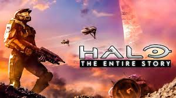

La trilogía de Halo: Halo: Combat Evolved - La historia que comienza el acontecimiento de los Anillos de Halo, con el Jefe Maestro y Cortana sin refuerzos en un mundo totalmente hostil. Halo PC - La versión portátil de PC del mismo juego. Halo Custom Edition - Una versión alterable para el jugador, además con un Multijugador en forma de servers, y con mapas personalizados tanto como Multijugador como de Campaña. Halo: Combat Evolved Anniversary - Remasterización 100% fiel a la primera entrega de la saga. Halo 2 - Continuación de los eventos del primer juego, defensa de la Tierra por parte de la Humanidad, además de una historia del lado como parte de los guerreros del Covenant. La alianza entre los Elites y los Humanos contra los Profetas y el Flood comienza aquí. Halo 2 Vista - La versión compatible con Windows Vista del mismo juego. Halo 2: Anniversary - Remasterización del juego incluido en Halo: TMCC. Halo 3 - La batalla final entre el Covenant y la Humanidad. Muerte de soldados destacados, además de la Comandante Miranda Keyes. El Jefe Maestro se las arregla para detener al Flood, costándole quedar atrapado en el espacio junto con Cortana durante 4 años, 7 meses y 10 días. La Saga del Reclamador es la nueva saga de Halo: Halo 4 - La continuación de la serie: después de 4 años, 7 meses y 10 días, el Jefe Maestro despierta de su sueño criogénico a bordo de la nave donde estuvo dormido aterrizando en el planeta denominado Requiem junto con Cortana, donde se tendrá que enfrentar a un antiguo mal que domina la galaxia en un nuevo conflicto. Halo 5: Guardians - Continuación a la Campaña de Halo 4 y Spartan Ops. El Jefe Maestro y el Equipo Azul desertan del UNSC, por este motivo al Equipo de Asalto Osiris les es asignada la misión de rastrear y remitir al los SPARTAN-II. Ninguno de los equipos pudo haber previsto la magnitud del conflicto que se aproximaría. Halo 6 - Tercera entrega de la Saga del Reclamador. Serie de juegos Spin-Offs: Halo: Chronicles (videojuego cancelado) Halo Wars - Primer juego de estrategia RTS, creado por Ensemble Studios. Halo 3: ODST - Historia secundaria de un Pelotón SCDO durante la invasión a la Tierra. Halo: Reach - Historia de un equipo de SPARTAN-IIIs, llamado Equipo Noble, sobre la fallida defensa de Reach. Titan (videojuego cancelado) Halo: Spartan Assault - Historia de la Spartan Sarah Palmer antes de los acontecimientos de 2557. Halo: Spartan Strike - Simulador táctico diseñado que recrea la Batalla de la Tierra en 2552. Halo Wars 2 - Segundo juego de estrategia RTS, creado por Creative Assembly.
Films Halo: Landfall - Tráiler de lanzamiento de Halo 3. Halo: La Película - Producción de Hollywood. Se ha dedicado indefinidamente y el productor ejecutivo, Peter Jackson, y el director Neill Blomkamp, han confirmado que su participación ha sido cancelada. Halo Legends - Una serie de anime creado por 343 Industries. Halo 4: Forward Unto Dawn - Serie de actores reales, la historia de cómo el Jefe Maestro sirvió de inspiración para el joven cadete del UNSC, Thomas J. Lasky, y como este mismo luego se convierte en el Comandante de la UNSC Infinity. Halo: The Television Series - Serie que será producida por Steven Spielberg. Halo: Nightfall - Serie que será producida por Scott Free Productions en conjunto con 343 Industries. Halo: The Fall of Reach - The Animated Series - Adaptación animada de la novela homónima.